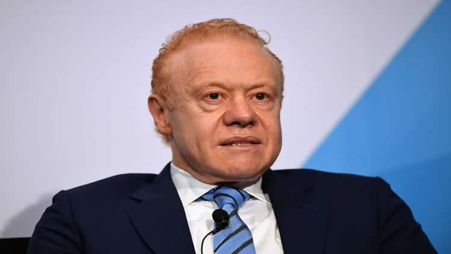

Throughout the following 15 years, Pratt Ventures grew 15-crease in deals and income, through greenfield activities and the obtaining of a few ridged assembling organizations that presently structure the core of Pratt Businesses./p>
It is the main significant paper compartment board organization that is 100 percent reused. In 2013, at that point New York City hall leader Michael Bloomberg gave Pratt a decree announcing September 17, 2013, Pratt Businesses Day.
In 2016, Pratt was granted the RISI North American Bundling President of the Year Grant. That equivalent year, Pratt opened a 100% reused paper factory close Chicago, adding about US$1 billion to his riches.It was authoritatively opened by then-Representative Mike Pence. In Walk, 2017, Pratt opened his 68th industrial facility, a crate making plant, with Wisconsin Senator Scott Walker in Beloit.